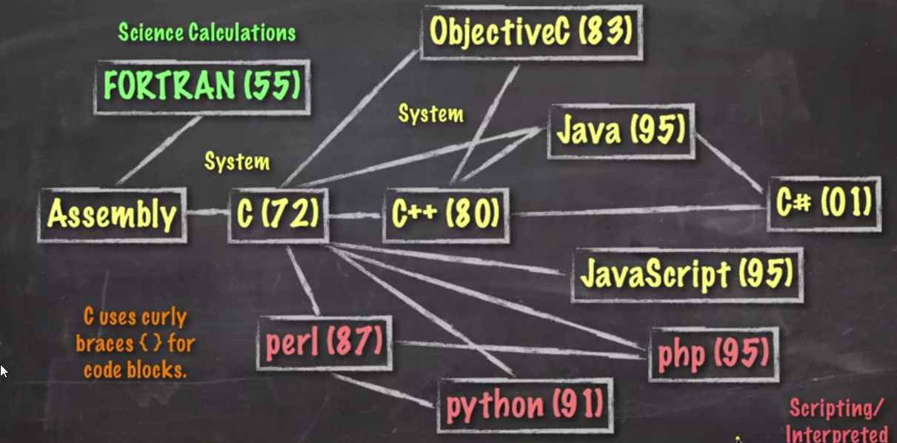
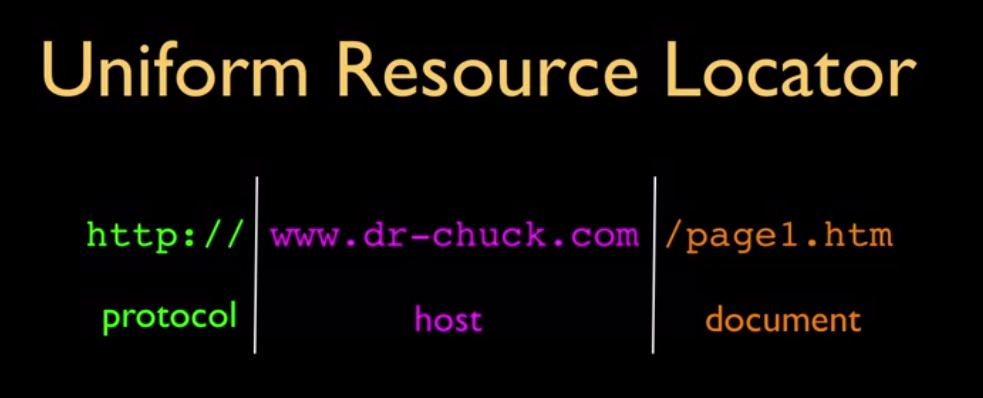
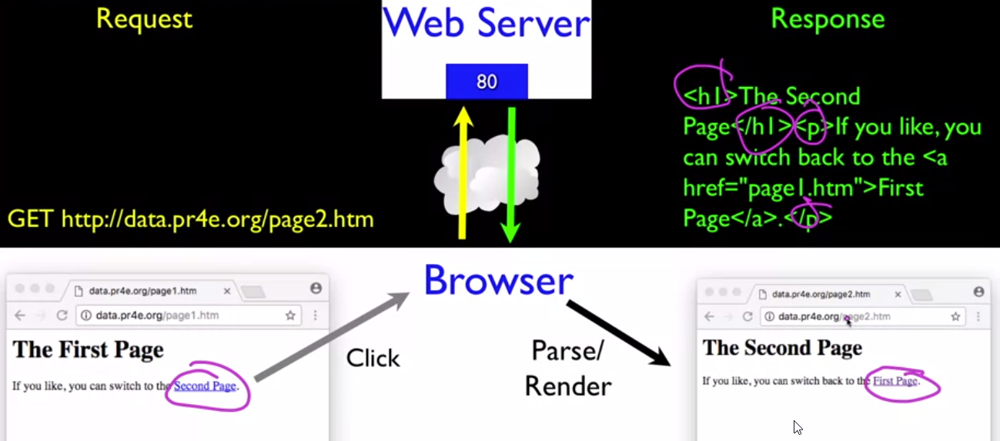
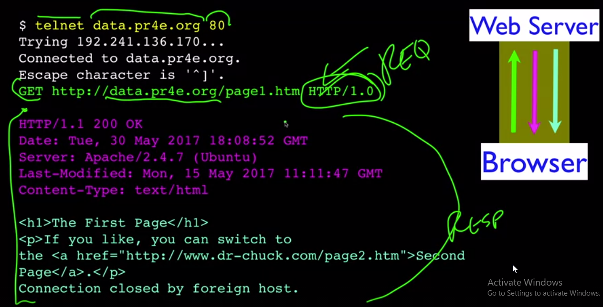
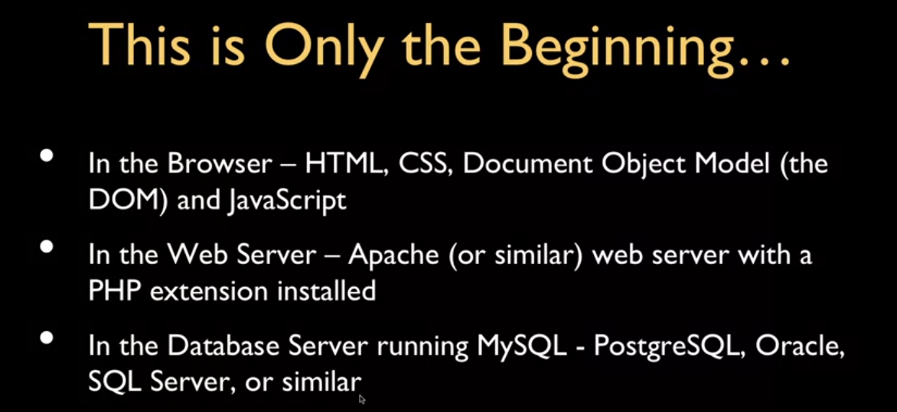
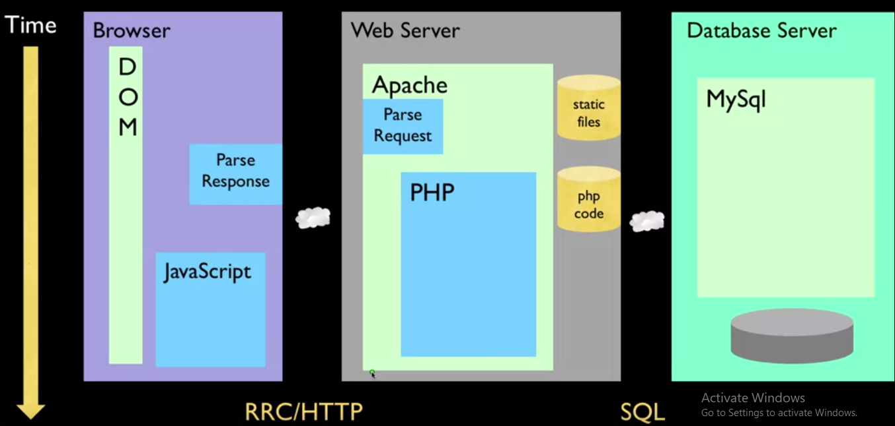
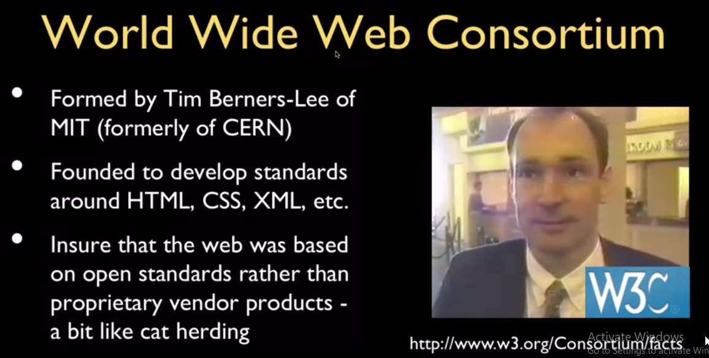

URL-->Protocol to know How we get documents, host to know where we get documents, document is what we get at the end







------------------------------------------------------------
HTML



-->Without hypertext links there would be no search engines
-->We can change elements in browser (DOM) but if you view source page it still fixed
-->DOM is not just your HTML source code, it's like the sensible parsed pretty version of the HTML source code
------------------------------------------------------------